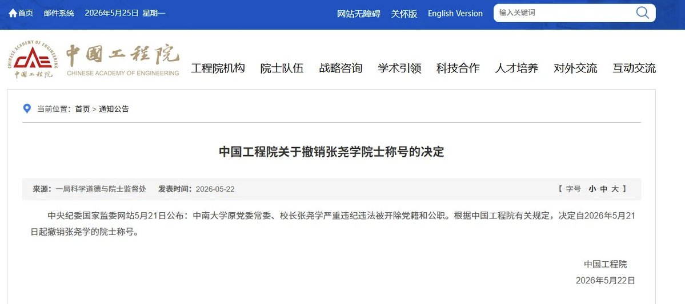

*⁂汐渋鈴蘭⁂*.･ﾟﾟ
@SupernovaLLan
😅

大漂亮| C Labs
@giantcutie666
张尧学院士被开除了😅
2015年1月，国家科学技术奖励大会上，空缺了整整9年的国家自然科学奖一等奖，被张尧学团队的"透明计算"摘得。
习近平等党和国家领导人出席并为获奖代表颁奖。
但这个被广泛报道为"颠覆冯·诺依曼结构"的"透明计算"理论，实际上就是"云计算"，毫无创新，而且代码还是抄的😅。 https://t.co/dwf19b9UAG